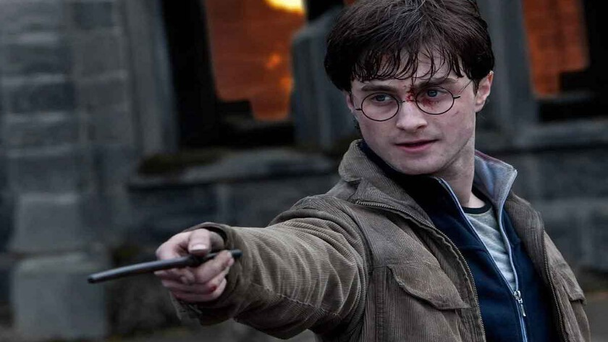
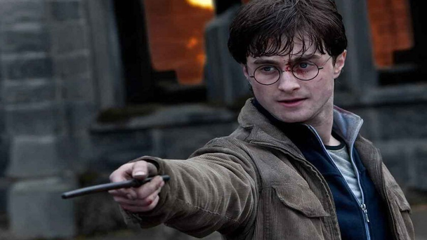

Matthew Lewis
Matthew David Lewis, nacido el 27 de junio de 1989 en Leeds, West Yorkshire, Inglaterra es un actor británico, conocido principalmente por interpretar a Neville Longbottom en las adaptaciones cinematográficas de Harry Potter. Lewis nació en Horsforth, Leeds, West Yorkshire, Inglaterra, hijo de Lynda y Adrian Lewis. Tiene dos hermanos, Chris Lewis y el actor Anthony Lewis. Estudió en St Mary's Menston. Lewis es un ávido fanático del equipo de la liga de rugby Leeds Rhinos en la Superliga y del equipo de fútbol Leeds United. Él es uno de los vicepresidentes de la organización benéfica "Fundación Leeds Rugby". En una entrevista con WBEZ, Lewis declaró su asociación con el número 11 y la forma en que ha aparecido varias veces a lo largo de su vida, como tener 11 años al obtener el papel de Neville Longbottom, que le ha inspirado para tatuarse el número 11 en el brazo derecho. Lewis actua desde que tenía cinco años de edad. Él comenzó con pequeños papeles en programas de televisión, debutando en Some Kind Of Life. Harry Potter Ha retratado a Neville Longbottom en las ocho películas de Harry Potter. Durante el rodaje de la adaptación cinematográfica de Harry Potter y la Orden del Fénix, Helena Bonham Carter, quien interpreta a Bellatrix Lestrange, le rompió accidentalmente el tímpano a Lewis cuando ella le metió la varita en la oreja. J. K. Rowling, dio un discurso durante el estreno mundial de Harry Potter y las Reliquias de la Muerte: Parte 2, en donde ella dijo que había siete principales miembros del reparto de la serie, a los que se hace referencia como Los Siete Grandes, y ella llamó a Lewis como uno de los siete miembros, junto con Daniel Radcliffe, Rupert Grint, Emma Watson, Tom Felton, Evanna Lynch y Bonnie Wright.


 
